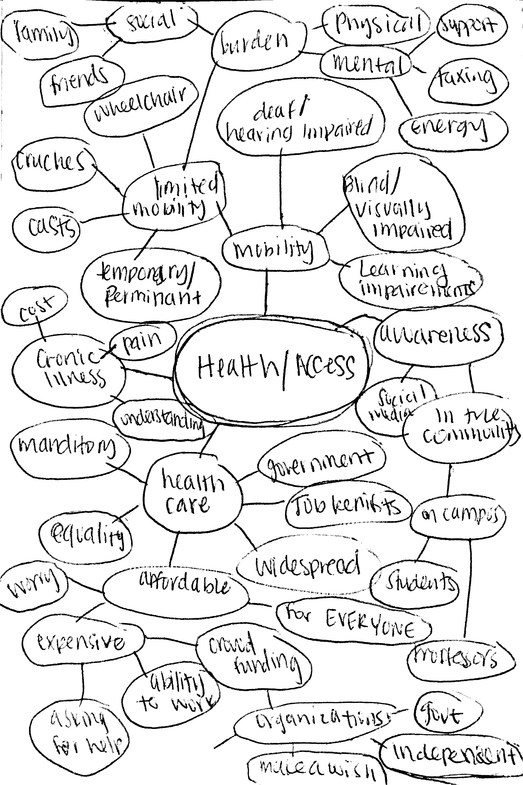

After brainstorming with the class, one area that I was interested in persuing was community service and volunteering. I created a mind map using word association in order to dive deeper into the subject. Through this process I discovered that one issue that occurs withing the topic of community service is the lack of knowledge and awareness of various groups and organizations and ways that people can help and get involved. I found that people are also often not aware of many of the problems that people in their community face.
Another area that I found interesting was Health and Access. I created another mind map using word association for this topic. While brainstorming, I began thinking about different issues under the topic of health, who is affected, and what they go through. An population that I found particularly important is people with chronic illnesses. I began brainstorming within that field by thinking about what they may struggle with.
Throughout my mind-mapping and word association exercises I was able to zero in on two major issues:
For my final project in DES157, I hope to dive deeper into one of these issues and create a platform that helps the people who are affected.